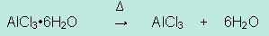

Unit 3: Quantities in Chemical Reactions
Activity 3: Percentage Composition, Empirical, and Molecular Formulas
Assignment
 Assignment 1
Assignment 1
Quiz
 Complete the following quiz and submit your work to the dropbox.
Complete the following quiz and submit your work to the dropbox.
Before you upload your completed quiz, ensure that your name appears on the top of the pages.
SCH3U Quiz
Percentage Composition, Empirical Formula and Molecular Formula
- Determine the percentage composition of each element in Al2(SO4)3.
(Inquiry marks = 4; communication marks = 2) - Determine the empirical formula of a compound with 32.4% sodium, 22.5% sulphur and 45.1% oxygen.
(Inquiry marks = 5; communication marks = 2) - Determine the molecular formula of a compound with 64.9% carbon, 13.5% hydrogen and 21.6% oxygen. Its molecular molar mass is 74.14 g/mol.
(Inquiry marks = 7; communication marks = 2)
Assignment 2: Determining the Empirical Formula of Hydrate and the Percent Composition of Water in the Hydrate
Complete the following assignment and submit your work to the dropbox.
Before you upload your file, ensure your name appears on the top of every page of your document.
Background
A common active ingredient in antiperspirants is aluminum chloride hexahydrate, AlCl3·6H2O. It blocks the sweat pores, so that you won't produce body odour from your armpits. When such a hydrate is heated, its anhydrous salt is produced separately with the water molecules detached. The chemical reaction is as follows:

The empirical formula of the hydrate may be determined by a comparison of the mole to mole relationship between the water molecule and the anhydrous salt. Recording the initial mass of the hydrate and the mass of the anhydrous salt will provide the necessary data for calculating the coefficient in front of the water molecule. The percentage composition of water in the hydrate can also be calculated using the recorded data.
|
Before you proceed to the Investigation, copy the following sections and answer the questions as part of your assignment. |
Determination of the Formula of a Hydrate and the Percent Composition of Water in a Hydrate
Part A
Observations
- Record the Initial Mass of the Hydrate ________g
Record the Final Mass of the Anhydrous Salt _________g
- Describe the colour of the hydrate as it was being heated during the procedure.
Part B
Data Analysis
For each calculated value, show your work.
- Mass of water in hydrate ___________g
Show your work: - Moles of water in hydrate __________mol
Show your work: - Moles of anhydrous salt, CuSO4 ________ mol
- Mole:mole ratio of water:anhydrous salt __________
Show your work: - Write the chemical word equation and the balanced chemical equation of the reaction.
- Calculate the percent composition, by mass, of water in the hydrate.
Show your work. - What colour would the anhydrous salt turn to if you added some water?

|
Proceed to the interactive investigation, Determination of the Formula of a Hydrate, but please be aware, that, depending on your Internet connection speed, the interactive simulation may take a few minutes to download. You can always continue reading the remainder of this page while you wait.Video created by:chemical education research group at Iowa State University and used with permission. |
|---|
|
Be aware of the following as you proceed through the interactive investigation. |
- The first screen, titled, Determination of the Formula of a Hydrate, will have a light brown box with an arrow which will allow you to proceed to the next screen when you click on it, once.
- In the second screen, it is important that you record the initial mass because if you click on the screen's light brown box then you will erase the initial mass value and you will start with a new initial mass.
- When you are ready to proceed with the simulation, go to: Click to start heating.
- Allow the reaction to go to completion. The time will show '00', again.
Record your final mass.
 Resources
Resources
This is a disclaimer. External Resources will open in a new window. Not responsible for external content.
Unless otherwise indicated, all images in this Activity are from the public domain or are © clipart.com or Microsoft clipart and are used with permission.